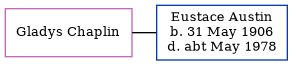

Gladys Chaplin, the wife of Eustace Godfrey Austin (the third cousin once-removed on the father's side of Nigel Horne), and married Eustace (a cinema attendant) in Surrey, England around Feb 19571.
Citations
England & Wales Marriages 1837-2005 - Findmypast
Family Tree

Generated by ged2site. Last updated on Jul 3, 2024